Carta d'identità elettronica (CIE)
Modalità di rilascio della carta di identità elettronica
È un documento che attesta l'identità, rilasciato ai cittadini (italiani e stranieri) residenti nel comune.
La durata della carta di identità è differenziata in base a tre fasce di età:
- 3 anni, per i minori di 3 anni
- 5 anni, nella fascia di età 3-18 anni
- 10 anni, per i maggiorenni
con validità fino alla data di compleanno del titolare, immediatamente successiva alla scadenza che sarebbe altrimenti prevista per il documento medesimo.
La CIE può essere richiesta da tutti i cittadini, italiani e stranieri, residenti nel comune con codice fiscale allineato fra Anagrafe del Comune ed Indice Nazionale delle Anagrafi (questa condizione viene verificata dal personale del Comune).
Non può essere rilasciata ai non residenti né agli iscritti A.I.R.E.
N.B.: nei casi di documentata urgenza può essere rilasciata la carta di identità cartacea senza appuntamento. Si veda al riguardo la parte della scheda informativa alla voce "rilascio carta di identità cartacea".
Servizi demografici e decentramento - Ufficio anagrafe - elettorale
€ 22,20. E' possibile effettuare il pagamento con POS.
L'operazione di raccolta dei dati ha una durata di circa 15 minuti. Alla fine della procedura viene consegnato all'interessato la scheda riepilogativa della richiesta del documento e contestualmente viene invece ritirata la precedente carta di identità (se in corso di validità).
La consegna del documento avviene entro 6 giorni lavorativi all'indirizzo comunicato dal richiedente.
Prenotazione obbligatoria
Per il rilascio/rinnovo della CIE è necessario prenotare un appuntamento. Chi è impossibilitato a prenotare on-line può telefonare ad una qualsiasi delle dodici Circoscrizioni o all'Ufficio Anagrafe, telefonando allo 0461/884291 - 884329.
L'acquisizione dei dati avverrà poi presso uno sei seguenti uffici:
- Ufficio Anagrafe - Piazza di Fiera, 17;
- Circoscrizione di Gardolo - Piazzale L. Groff, 2;
- Circoscrizione Oltrefersine - Via La Clarina, 2/1.
Acquisizione dati e consegna carta di identità
Il Comune identifica il cittadino, acquisisce la foto, la firma, le impronte digitali, il pagamento della carta di identità e rilascia ricevuta. Il nuovo documento verrà inviato per posta entro sei giorni lavorativi dal Poligrafico dello Stato che provvede alla materiale stampa del documento ed all'invio all'indirizzo comunicato al momento della richiesta.
Per l'acquisizione dei dati è necessario:
Cittadini italiani maggiorenni
Presentarsi di persona con:
- la vecchia carta d’identità o un altro documento di riconoscimento
- 1 fototessera
- tessera sanitaria provinciale
Il richiedente che intende ottenere tale documento valido per l’espatrio deve inoltre sottoscrivere una dichiarazione di non trovarsi in alcuna delle condizioni ostative al rilascio del passaporto (tali condizioni vengono riportate nelle note).
Cittadini dell'unione europea maggiorenni
Presentarsi di persona con:
- la vecchia carta d’identità o un altro documento di riconoscimento
- 1 fototessera
- tessera sanitaria provinciale
Cittadini di Stati terzi maggiorenni
Presentarsi di persona con:
- un documento di riconoscimento o un altro documento di riconoscimento
- 1 fototessera
- tessera sanitaria provinciale
- il permesso di soggiorno in corso di validità
Cittadini italiani minorenni
Il minore deve essere presente personalmente con 1 fototessera e la tessera sanitaria provinciale.
Se il documento è richiesto valido per espatrio i genitori, muniti di un valido documento di riconoscimento, dovranno sottoscrivere atto di assenso (Mod. 1151) per l'espatrio.
Nel caso uno dei due genitori fosse impossibilitato a presentarsi allo sportello, l'atto di assenso (Mod. 1151) può essere presentato da un solo genitore ma deve essere compilato e firmato dai due i genitori e consegnato assieme alle fotocopie del documento di riconoscimento di entrambi.
Se il documento è richiesto non valido per espatrio è sufficiente la presenza e la firma di un genitore.
Per il minore di anni 14 , l’uso della carta di identità ai fini dell’espatrio è subordinato alla condizione che il minore viaggi in compagnia di uno dei genitori o di chi ne fa le veci, o che venga menzionato, su una dichiarazione rilasciata da chi può dare l’assenso o l’autorizzazione, convalidata dalla Questura o dalle autorità consolari, il nome della persona, dell’ente o della compagnia di trasporto a cui il minore medesimo è affidato.
Cittadini dell'unione europea o di Stati terzi minorenni
Il minore deve essere presente personalmente con:
- 1 fototessera
- tessera sanitaria provinciale
- almeno un genitore per la richiesta
- permesso di soggiorno in corso di validità (solo per cittadini extracomunitari)
Rilascio carta d'identità cartacea
E' ancora possibile rilasciare la carta d'identità cartacea nei seguenti casi:
- cittadino residente impossibilitato a presentarsi allo sportello per impedimento fisico;
- cittadino residente ma con un disallineamento, non risolvibile in tempi brevi, dei dati fra anagrafe comunale, tributaria e INA (Indice Nazionale delle Anagrafi);
- cittadino italiano residente all'estero ed iscritto nell'AIRE del comune di Trento;
- cittadino non residente ma temporaneamente domiciliato nel comune di Trento o iscritto nell'AIRE di altri Comuni. In questi casi il rilascio del documento avviene, come specificato dalle disposizioni ministeriali in materia, “solo in casi di particolare ed urgente necessità dimostrata” ed esclusivamente previo nulla osta del comune di residenza;
- casi di documentata urgenza.
In tutti questi casi è necessario presentarsi presso la sede di Piazza di Fiera, 17 portando con sé oltre al documento scaduto/in scadenza tre foto tessera recenti.
Per i casi di cui al punto a) è necessario esibire anche documentazione che attesti la natura dell'impedimento.
Rinnovo della carta di identità elettronica
La carta d’identità può essere rinnovata a partire dai 6 mesi antecedenti la scadenza.
Il Comune avviserà direttamente al proprio indirizzo tutti i residenti dell’approssimarsi della scadenza del documento.
Non è necessario richiedere una nuova carta d’identità nel caso di cambio di indirizzo, stato civile, titolo di studio o professione
Furto o smarrimento della carta d'identità elettronica
In caso di furto o smarrimento del documento ancora in corso di validità, oltre alla denuncia fatta alle competenti autorità di pubblica sicurezza, per ottenere un nuovo rilascio della carta di identità è necessario esibire un documento di riconoscimento o, in mancanza, si procederà all'identificazione mediante due testimoni maggiorenni.
Donazione organi e tessuti
Contestualmente alla richiesta o al rinnovo della carta di identità, il cittadino maggiorenne può esprimere direttamente al funzionario di anagrafe la propria volontà sulla donazione di organi e tessuti.
Elenco delle condizioni ostative al rilascio del passaporto
D.P.R. 6 agosto 1974, n° 649 (Disciplina dell’uso della carta d’identità e degli altri documenti equipollenti al passaporto ai fini dell’espatrio):
Art. 1 – L’interessato che intenda giovarsi dell’equipollenza, prevista dalle norme in vigore, della carta d’identità al passaporto, deve sottoscrivere, in sede di richiesta della carta d’identità, dichiarazione di non trovarsi in alcune delle condizioni ostative al rilascio del passaporto di cui all’art. 3, lettere b), d), e), g) della legge 21 novembre 1967, n° 1185.
In difetto di sottoscrizione della dichiarazione predetta l’autorità che provvede al rilascio deve apporre sulla carta d’identità l’annotazione: “documento non valido ai fini dell’espatrio ”.
Legge 21 novembre 1967, n° 1185 :
Art. 3 – Non possono ottenere il passaporto:
lett. b) i genitori che, avendo prole minore, non ottengano l’autorizzazione del giudice tutelare; l’autorizzazione non è necessaria quando il richiedente abbia l’assenso dell’altro genitore, o quando sia titolare esclusivo della potestà sul figlio;
lett. d) coloro che debbano espiare una pena restrittiva della libertà personale o soddisfare una multa o ammenda, salvo per questi ultimi il nulla osta dell’autorità che deve curare l’esecuzione della sentenza, semprechè la multa o l’ammenda non siano già state convertite in pena restrittiva della libertà personale, o la loro conversione non importi una pena superiore a mesi 1 di reclusione o 2 di arresto;
lett. e) coloro che siano sottoposti ad una misura di sicurezza detentiva ovvero ad una misura di prevenzione prevista dagli articoli 3 e seguenti della legge 27 dicembre 1956, n° 1423;
lett. g) coloro che, essendo residenti all’estero e richiedendo il passaporto dopo il 1° gennaio dell’anno in cui compiono il 20° anno di età, non abbiano regolarizzato la loro posizione in rapporto all’obbligo del servizio militare.
Elenco degli stati nei quali è consentito recarsi con la carta di identità è disponibile nel sito internet
www.poliziadistato.it (selezionare Per il cittadino - passaporto - documenti validi per l'attraversamento delle frontiere).
- L. 15.5.1997 n. 127
- L. 16.6.1998 n. 191
- D.P.C.M. 22.10.1999 n. 437
- D.L. 25/6/2008 n. 112 convertito con modifiche nella L. 133/2008
- L. 21 novembre 1967 nr. 1185;
- D.P.R. 6 agosto 1974 nr. 649;
- R.D. 18 giugno 1931 nr. 773;
- R.D. 6 maggio 1940 nr. 635;
- D.P.R. 30 novembre 1965 nr. 1656;
- Circolare Ministero dell'Interno n. 23 del 28 luglio 2010
- D.L. 13 maggio 2011 n. 70 convertito nella Legge 12 luglio 2011 n. 106
- D.L. 5/2012 convertito con modificazioni dalla Legge 4 aprile 2012 n. 35
- D.L. 78/2015 convertito con modificazioni dalla legge 6 agosto 2015
- D.M. 23 dicembre 2015
- D.M. 25 maggio 2016.
Immagini
Informazioni correlate
Classificazione dell'informazione
Assegnazione di spazi e strutture del patrimonio comunale a enti e associazioni senza scopi di lucro
Si tratta della procedura per ottenere l'assegnazione di spazi e strutture del patrimonio comunale da destinare allo svolgimento di attività associative.

Modulo per la presentazione della documentazione per la liquidazione del contributo assegnato corredato da:
Modulo per la presentazione della domanda di contributo a cui dovrà essere allegato il bilancio preventivo - Modulo 404B
Modulo da allegare alla domanda di contributo Mod. 0404A
Riferimenti
Mercoledì, 31 Agosto 2016 - Ultima modifica: Mercoledì, 04 Luglio 2018

.png) 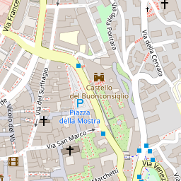
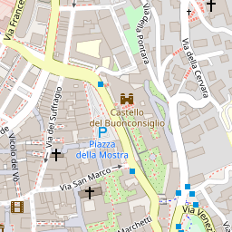.png) 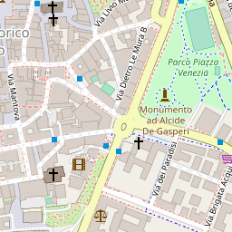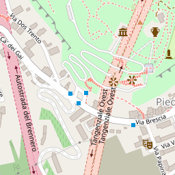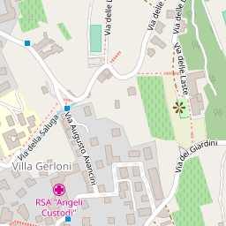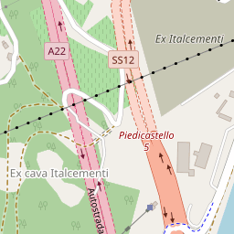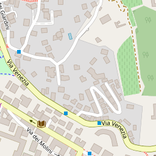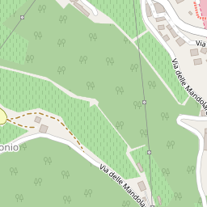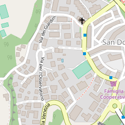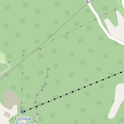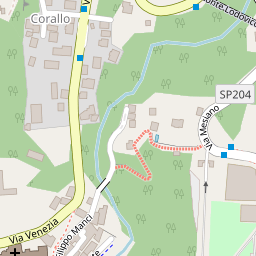
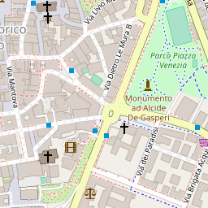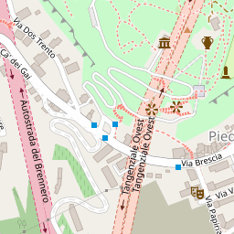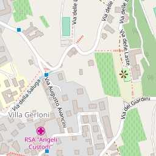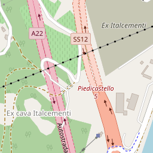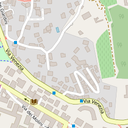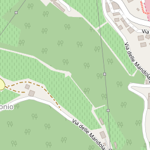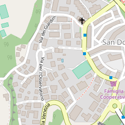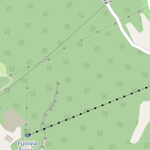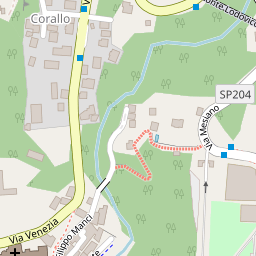
{kind=link}